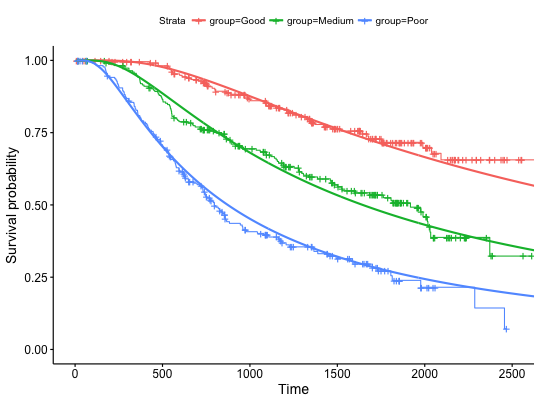

Create ggplot2-based graphs for flexible survival models.
ggflexsurvplot(fit, data = NULL, fun = c("survival", "cumhaz"),
summary.flexsurv = NULL, size = 1, conf.int = FALSE,
conf.int.flex = conf.int, conf.int.km = FALSE, legend.labs = NULL, ...)
Arguments
- fit
- an object of class
flexsurvreg.
- data
- the data used to fit survival curves.
- fun
- the type of survival curves. Allowed values include "survival"
(default) and "cumhaz" (for cumulative hazard).
- summary.flexsurv
- (optional) the summary of the
flexsurvreg
object as generated by the function summary().
- size
- line size for the flexible survival estimates.
- conf.int, conf.int.flex
- logical. If TRUE, add confidence bands for
flexible survival estimates.
- conf.int.km
- same as
conf.in.flex but for the kaplan-meier
estimates.
- legend.labs
- character vector specifying legend labels. Used to replace
the names of the strata from the fit. Should be given in the same order as
those strata.
- ...
- additional arguments passed to the function
ggsurvplot().
Value
a ggsurvplot
Examples
if(!require("flexsurv")) install.packages("flexsurv")
#> Loading required package: flexsurv
require("flexsurv")
fit <- flexsurvreg(Surv(rectime, censrec) ~ group,
dist = "gengamma", data = bc)
ggflexsurvplot(fit)
